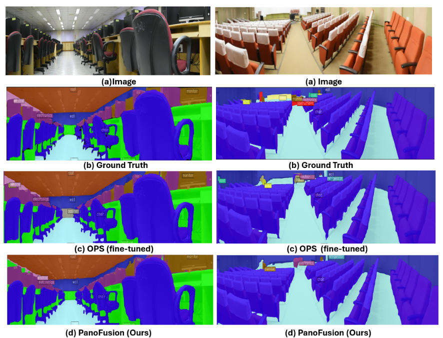
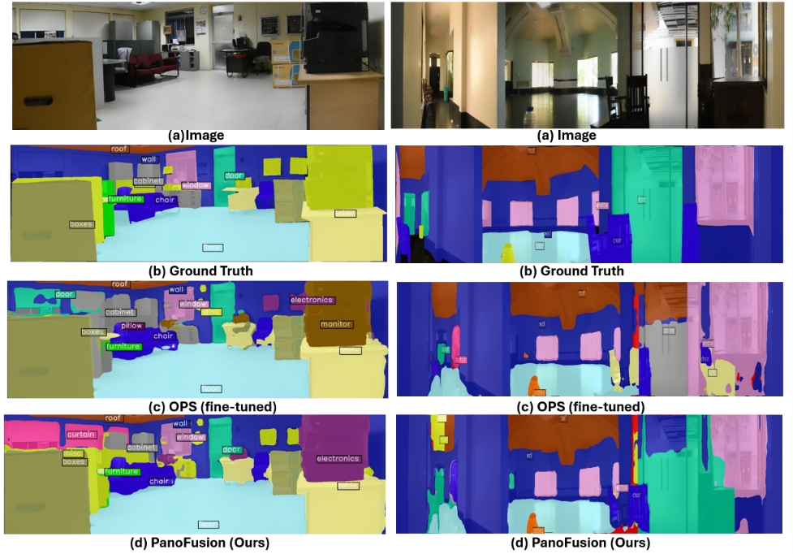

Preview
Drag each slider to inspect the original panorama against its matching human segmentation mask.


PanoFusion
CLIP features and a Deformable Adapter Network provide coarse semantics. Frozen MobileSAM priors guide SBR-Net through gated cross-attention to refine segmentation.
.png)
Model outputs
Input panoramas, ground-truth annotations, fine-tuned OPS predictions, and PanoFusion outputs across four indoor scenes.


Evaluation
Reported manuscript results. All metrics are percentages; higher is better. WildPASS uses the paper’s custom supervised split.
| Method | mIoU | mAcc | Boundary IoU | Boundary F-score |
|---|---|---|---|---|
| SegFormer | 30.42 | 69.16 | 24.23 | 29.30 |
| SAM + CNN tracking | 19.89 | 42.33 | 17.53 | 26.77 |
| OmniSAM | 43.35 | 60.74 | 35.76 | 37.38 |
| OPS | 41.66 | 64.74 | 35.80 | 50.29 |
| EDA-PSeg | 31.92 | 55.50 | 29.92 | 62.15 |
| PanoFusion | 52.28 | 79.13 | 34.05 | 59.15 |
| Method | mIoU | mAcc | Boundary IoU | Boundary F-score |
|---|---|---|---|---|
| OmniSAM | 49.69 | 61.54 | 46.64 | 55.30 |
| OPS | 54.27 | 66.73 | 49.14 | 63.50 |
| EDA-PSeg | 48.00 | 63.02 | 36.54 | 70.40 |
| PanoFusion | 57.87 | 67.45 | 51.95 | 70.88 |